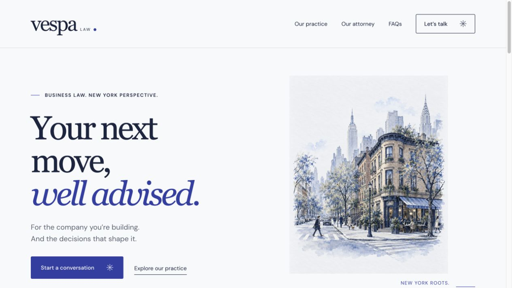
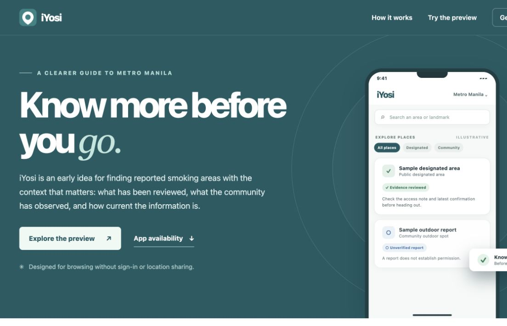

The wider portfolio
More things
I’ve made.
Websites, experiments, and other questions I’ve followed through.

The wider portfolio
Websites, experiments, and other questions I’ve followed through.

